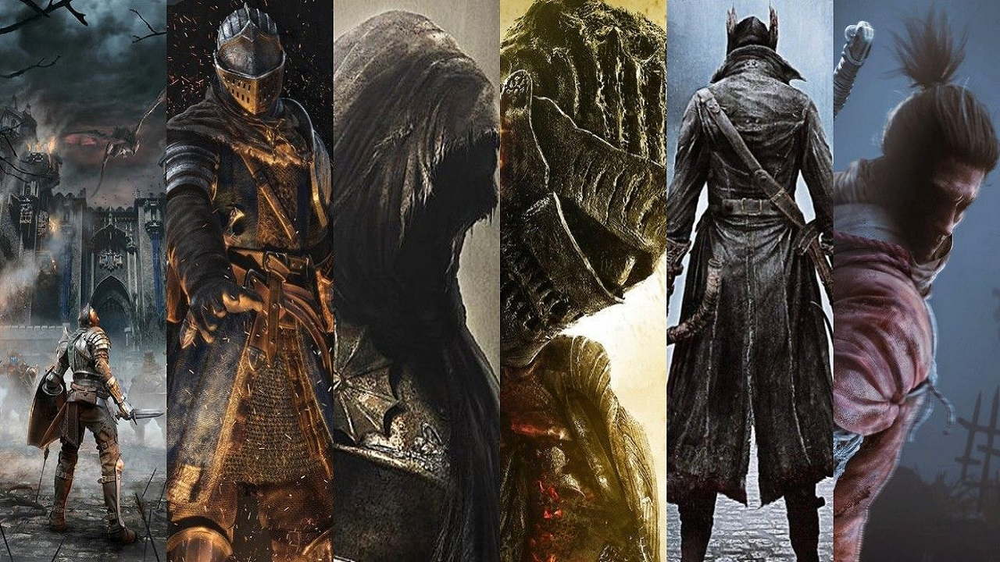

Hitless Runs
Perfection is not attainable, but if we chase perfection we can catch excellence.
Vince Lombardi Jr

What is a hitless run?
A Hitless Run or a No-Hit Run is completing a game from start to finish without taking a hit from an enemy or trap. This is one type of a greater category of runs called Challenge Runs. These runs are meant to challenge the person attempting them by adding extra difficulty to the game.
What is a hit?
A hit is a loss of health or stagger caused by an enemy or trap. This includes attacks that have connected with the player but have dealt no damage. Enviornmental effects like being poisoned from a swamp are not counted as hits.
How did no-hit runs start?
A streamer by the name of The_Happy_Hob was the first person to attempt and complete a hitless run on the game Dark Souls. After many attmpets of learning each enemy's moves and learning the play patterns on February 16th 2016 Hob achieved the world's first no-hit run. Dark Souls 3 released not too long after in 2017 and the amount of people inspired by his achievement increased the amount of people going for the world's first of DS3. Today hundreds of people have completed hitless runs and that number continues to grow as players look for ways to make the games they play more challenging.